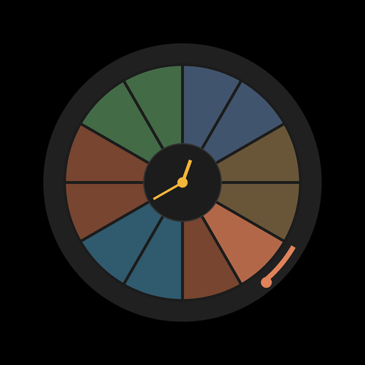

Organ meridian time
Qi Clock
The traditional Chinese organ clock, live on your screen: an Android app, a home-screen widget, a screensaver and a Wear OS watch face.
See which organ is in its peak hour, how much of the window remains and what the season asks of you, in ten art styles plus seasonal skins that arrive with the calendar.
No account. No ads. No tracking.